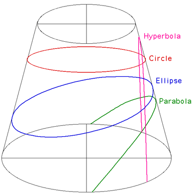
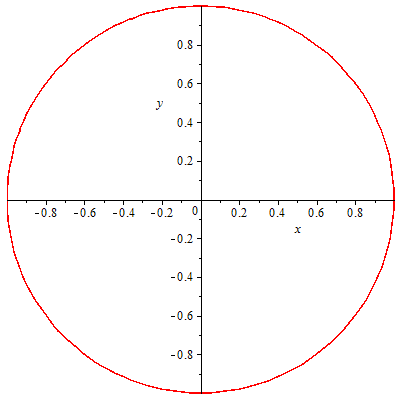
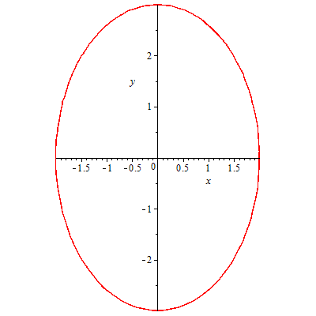
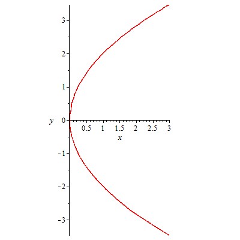
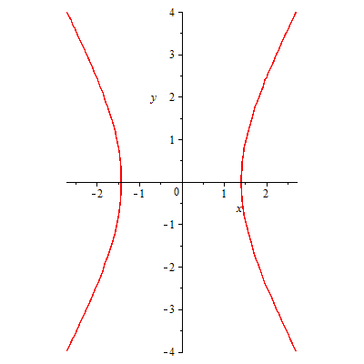

Conic section
If a cylinder is sliced by a plane a number of curves arise depending on the angle of the plane with respect to the cylinder axis, these are called conic sections. Conic sections were studied extensively by the Greeks as early as 350 BC in an attempt to solve the great geometric problems of the day, namely, squaring the circle, duplicating the cube, and trisecting an angle. They were also studied extensively in relation to Keplers laws of planetary motion by Descarte and Fermat. There are four different classes of curve (circle, ellipse, parabola, and hyperbola) and they are illustrated below.

Conic Sections
General Equation
The general equation of a conic section is given below.
\begin{align} \ A x^2 + B x y + C y^2 + D x + E y + F = 0 \\ \end{align}
The type of curve is dictated by the quantity $B^2 - 4 A C$. If it is less than $0$ the curve is an ellipse or circle. If equal to $0$ then a parabola, if greater than $0$ then a hyperbola.
Maple Sample Code

with(plots); circle := implicitplot(x^2+y^2 = 1, x = -1 .. 1, y = -1 .. 1); display(circle, scaling = constrained);

with(plots); ellipse := implicitplot((1/4)*x^2+(1/9)*y^2 = 1, x = -2 .. 2, y = -3 .. 3); display(ellipse, scaling = constrained);

with(plots); parabola := implicitplot(y^2 = 4*x, x = -3 .. 3, y = -4 .. 4); display(parabola, scaling = constrained);

with(plots); hyperbola := implicitplot((1/2)*x^2-(1/6)*y^2 = 1, x = -3 .. 3, y = -4 .. 4); display(hyperbola, scaling = constrained);
To Developers
//Source code is not available
References